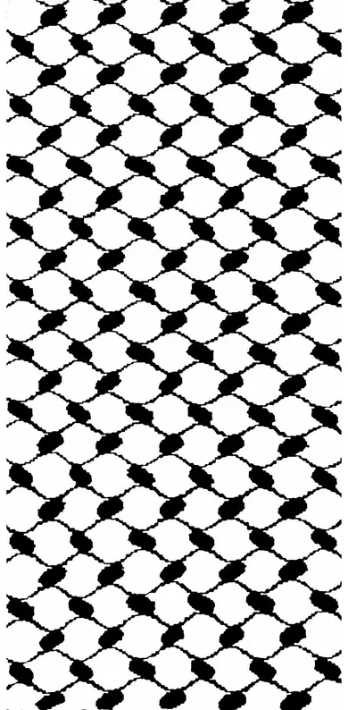
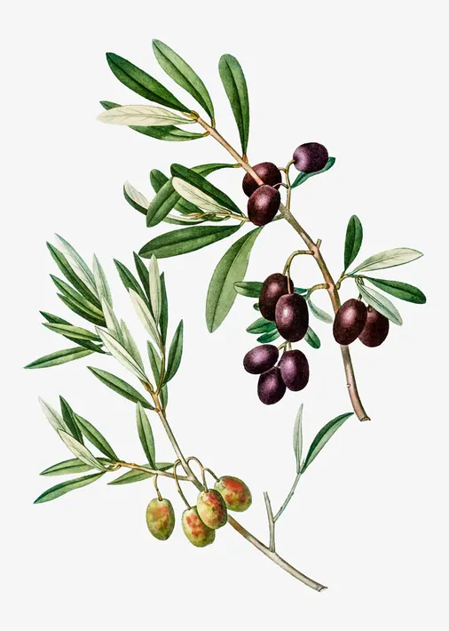
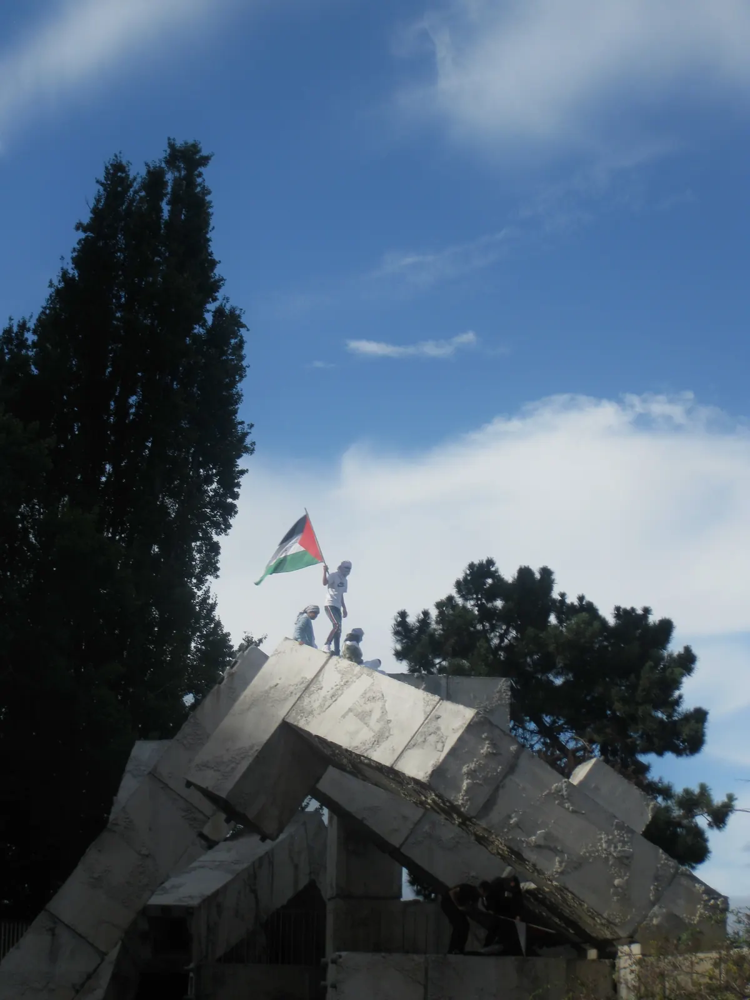
FREEDOM FOR FILASTINE
パレスチナ に 自由を
فلسطين سوف
تتحرر
"...we have on this land all of that which makes life worth living
On this land
The lady of our land
The mother of all beginnings
And the mother of all ends
She was called Palestine
Her name later became Palestine
My lady….
Because you are my lady
I have all of that which makes life worth living."
Mahmoud Darwesh
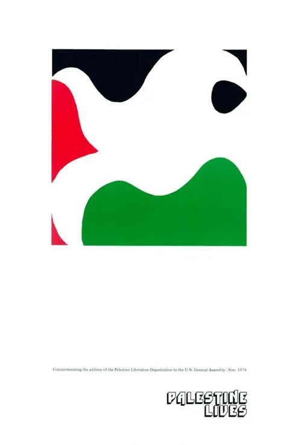
As the Zashi team does not have the capacity to fully engage with every material on this list, if you have any quarrels or resources you believe should be changed or added, please let us know. It is also a living thread, so it will be updated regularly.
While this page will never fully capture the Palestinian experience, this is an attempt to provide a glimpse into their story, the on-going genocide, and the beauty of their culture.
Table of Contents:
~Media
~Educational Resources:
Intro,
Existing Compilations,
Read Palestine,
Palestine Poster Project,
Select Articles: the vile creature that is Israel...
Symbols of Palestine
~How to help Palestine
represent! represent!
Money moves,
BDSM
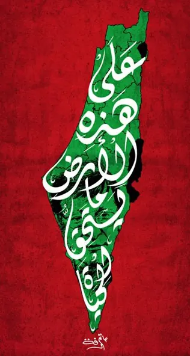
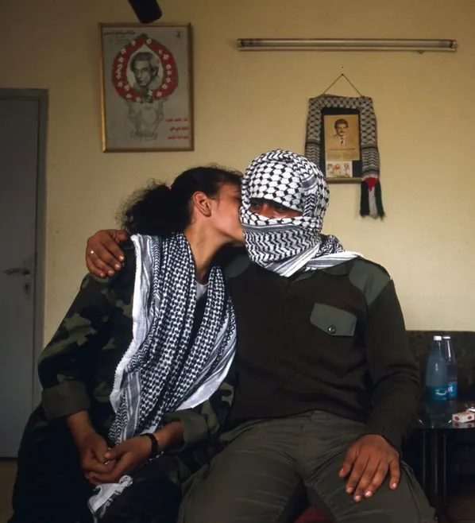
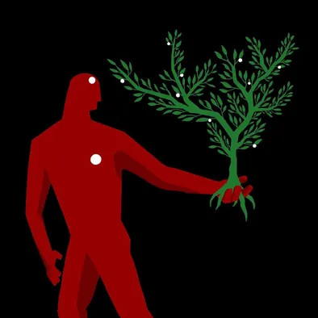
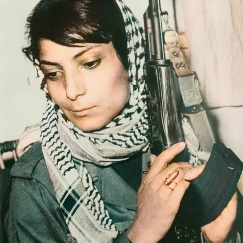
Instagram accounts:
@eye.on.palestine
@hiddenpalestine
@propagandavstruth
@visualizing palestine
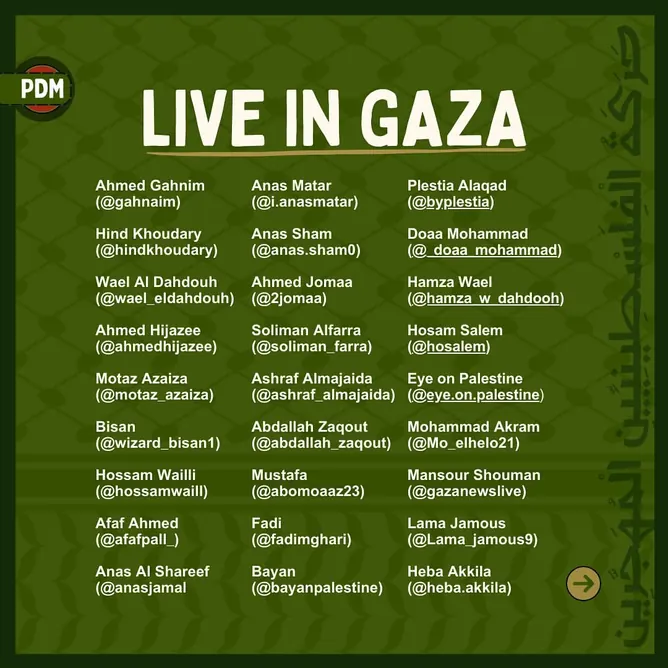
from @palestinediasporamovement
While there is irrefutable evidence that Israel is carrying out a genocide against the Palestinians, we must keep in mind that there are two sides to every story. Thus, it is imperative that people engage with both sides of the media while using credible sources.
Haaretz is the oldest Israeli publication that produces fairly reliable journalism. It can be useful to see what myths are being spelled, or even, have them confirm information that Israeli politicians will deny; when the opposition declares it themselves, information is less susceptible to scrutiny.
And a friendly reminder to not be incredulous or overly credulous: proceed with a healthy level of skepticism and work towards a well-rounded and informed perspective.
Media Outlets
Palestinian voices in Japan:
@palestine.in.japanese
@hanin.gaza.jp
Hanin is Palestinian,
born in Gaza but raised in Japan.
EDUCATIONAL RESOURCES
Introduction: Palestine Before Israel
“We shall have to spirit the penniless population across the border by procuring employment for it in the transit countries, while denying it any employment in our country. Both the process of expropriation and the removal of the poor must be carried out discreetly and circumspectly”
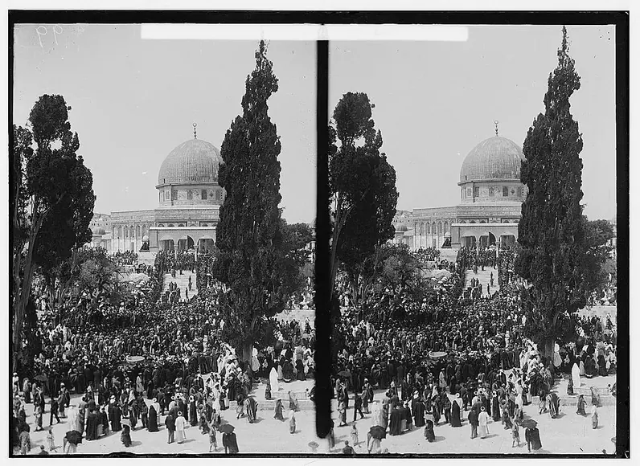
These are the words from the diary of Theodor Herzl , who is often regarded as the forefather of Zionism or the movement to create a Jewish state. Herzl wrote this in 1895, amongst the backdrop of growing antisemitism and Jewish pogroms in Europe. He thus looked to create a Jewish nation state to ensure their safety. While Herzl and the other Zionist founders contemplated building their state in different countries such as Brazil, Kenya, Cyprus, and other countries, they desired the land of Palestine for biblical and historic reasons but also to escape Europe's antisemitism. Jews lived in the same land of Palestine under Roman rule and in the bible it was deemed as the holy land for Jews. Usually For these reasons, they believe that Palestine is actually their land. However, despite their desire to build their state, they had one big problem in their way: the Palestinians.
Another common saying amongst Zionists is "A land without a people, for a people without a land", meaning that Israel would be created for the Jews in an uninhabited land. But again, Palestine was already inhabited by an indigenous, mostly Arab population (but notice how with the aforementioned quote they are already attempting to ignore the existence of Palestinians). To get a deeper dive into the history of Palestine here is a more exhaustive chronology assembled by the UN. The Palestinian History Tapestry is also good as a visual, chronological resource. Here is another article that helps explore the question of origin by decolonize Palestine. They have a readling list, debunking common myths, and Palestine 101 page that is good as a primer. They reminded me of another point that the concept of nationalism / borders was is a modern phenomenon.
I believe the question of Palestinian nativity lies in another very simple testament that is their skin tone: are we seriously gonna argue that white, Europeans and Americans are native to the land over people with tanner skin? If that is the case, why is it that Israel has one of the highest rates of skin cancer in the world? According to this article, it is largely the European demographic with the highest number of cases. To fill in the gaps for those that aren't following, melanin (the substance that is responsible for darker skin) protects against UV rays from the sun. This article further explains my argument for Palestinian nativity - unfortunately they don't declare Australia as a subject of colonialism but just "migration" :|
It is also rather telling of how Israel has been known to burn and uproot native olive trees in Palestine. According to this article by Time in 2019, they have uprooted 800,000 olive trees since 1967. Despite all of this, Israel has the audacity to use olive symbols on their passport... It should be noted that part of this uprooting is not only to eradicate Palestinian culture but also their income and livelihoods as olive oil is a major crop and export; one quarter of gross agricultural income in Palestine comes from olive oil.
To resume our historical discussion, prior to the fabrication of Israel's nation-state and occupation, Palestine was a pluralistic and diverse people comprising of Muslims, Christians, and Jews.
Before the Nakba in 1948:
1931: Jewish 174,606 against a total of 1,033,314;
1936: Jewish numbers had gone up to 384,078 and total to 1,366,692
1946: 608,225 Jews, 1,912,112 Arabs
(The Question of Palestine Edward Said, p. 11)
To reiterate it, Palestinians are the native people of the land.
However, despite their native, historic ties to the land, Palestine would be signed off by the Brits for in 1917 under what is known as the "Balfour Declaration" which essentially provided the Zionists with their approval to create their state. It must be noted however that there was no Palestinian representation when this deal occurred between the Brits and Zionists.
Before we continue further, if you don't know, you outta know know where Falastin is and what the land looked like before Israel's occupation (Aljazeera's Palestine Remix is a great resource for visualizing the occupation. It also has a useful timeline amongst other resources on their website.)
A short animated introductory video
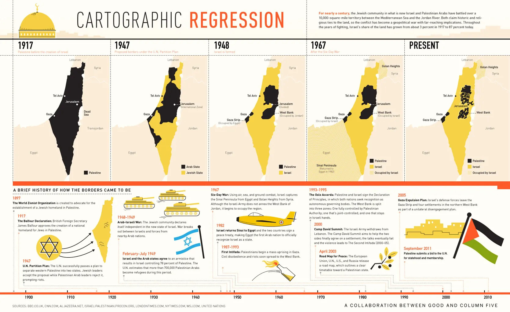
In 1947, the UN passed the partition plan that divided Palestinian land into two states, a state for Israel and a state for Palestine. As expected, Palestinians rejected the partition plan and protested which resulted in the first Arab-Israeli war in 1948 also known as the Nakba, which in Arabic means the "catastrophe" or "disaster" as 700,000 Palestinians were dispelled from their homes and land by Israel while also killing around 15,000 Palestinians in the process. In addition to the dispossession and massacre of Palestinians, Israel took over more land than what was agreed in the partition plan after winning the war. This resulted in Israel gaining around 78% of Palestinian land. As they were exiled from their homes and many Palestinians held on to their keys hoping to one day to return to their homes and their land. For the Palestinians that now lived under Israeli occupation they were reduced to second-class citizens holding far less rights than their Israeli counterparts.
While I will not be able to exhaustively list out every step of the history between Palestine and Isrl, the refutation for the biblical argument for the creation of their state simply with a verse from the Old Testament:
Why should the creation of Israel be built on the suffering of Palestinians?
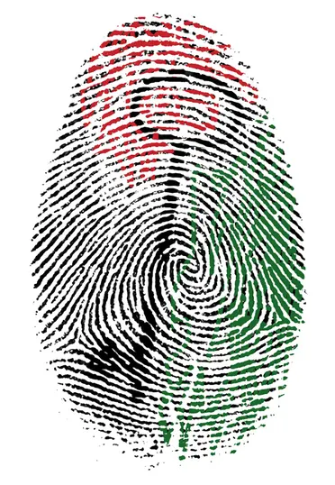
Source of image:
Inspired by the writings of Ghassan Kanafani
Embroidery:
Suheer Abu Rabia, Drejat, Naqab
Compilations: resources that have already been curated by activists and scholars
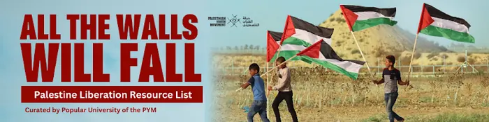
All the Walls Will Fall
Compiled by the Popular University... is an updated list of resources with introductory readings on Filastine, Conditions in Gaza, Theory and Logic of Palestinian Resistance and Struggle (the right to resist, the law of return), Israeli media tactics, and Palestinian media sources
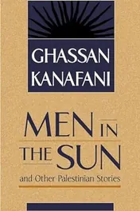
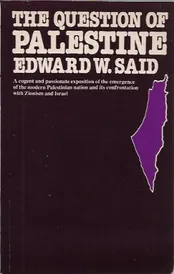
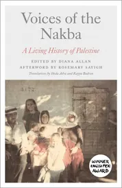
Read Palestine!
Poetry, fiction, non-fiction, and everything in
betweeeen. Read Palestine week was
unfortunately only till 12/5. Buttt you can use
tools such as the Internet Archive, scihub, or
libgen, to access many of these titles still. Full
write-up on these tools are on our Guerilla Tactics
page.
Please try to support Palestinian authors when
possible.
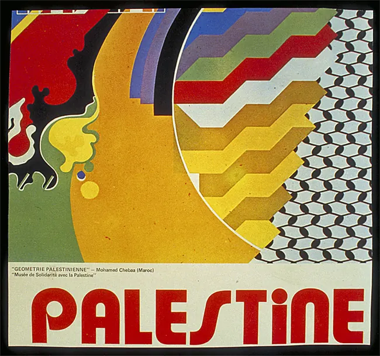
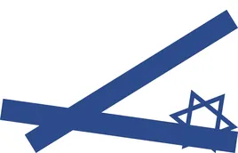
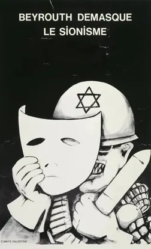
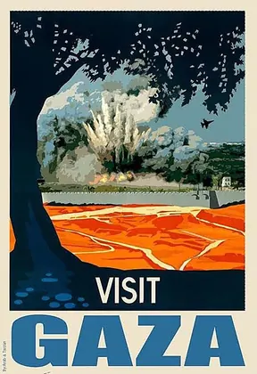
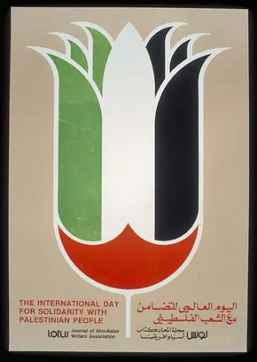
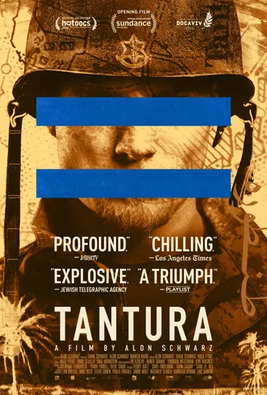
Select Articles and Videos
Sooner or later there comes a time when an attempt is made to understand one’s national or religions adversary and at the same time to criticize certain deep and important aspects of the history of one’s own group; and both these developments go together. Only when historiography becomes - as Pieter Geyl put it so well - ‘a debate without end’ rather than a continuation of war by historiographic means, only then does a humane historiography, which strives for both accuracy and fairness, become possible; and it then turns into one of the most powerful instruments of humanism and self-education.
Israel Shahak
Alec will write a full piece here... eventually.... maybe....
Isrl at its core is a racist,
settler-colonial project
I mean yeah they don't even try to hide it, just look at the words of every member of the
Likud party (source) (the extreme right-winged party that Netanyahu belongs to), and you'll
be enlightened to their extremely racist values and practices. If you watch the following
short video it'll provide some insight into how prejudiced Israelis are.
Some things about Israel:
-Since 2003, Palestinians married to Israelis can't naturalize on the basis that they want to
keep a Jewish state... but being Palestinian isn't a religion lol
-Interfaith marriage is not recognized (Haaretz, 2014)
-self-determination is exclusive to Jews in Israel - which I guess shouldn't be to much of
surprise considering they want to create a Jewish nation state...
-Israel loves historical amnesia:
-it is illegal to commemorate the Nakba, the expulsion of over 750,000 and massacre of
around 14,000 Palestinians in 1948. Any institution or body that mourns the day of
the Nakba (May 15th) is liable to lose financial support.
-A Hilton hotel was built over a Palestinian cemetery in Ahuzat Bayit, now known as Tel
Aviv
-The film Tantura (2022) by Alon Schwarz, an Israeli documentarian, uncovers the truth
of the 1948 Tantura massacre of Palestinians that was covered up by the Israeli government.
Teddy Katz, a graduate student at an Israeli University wrote his thesis on the subject but
was completely censored and the truth was largely hidden till recently... internet archive link
to the film
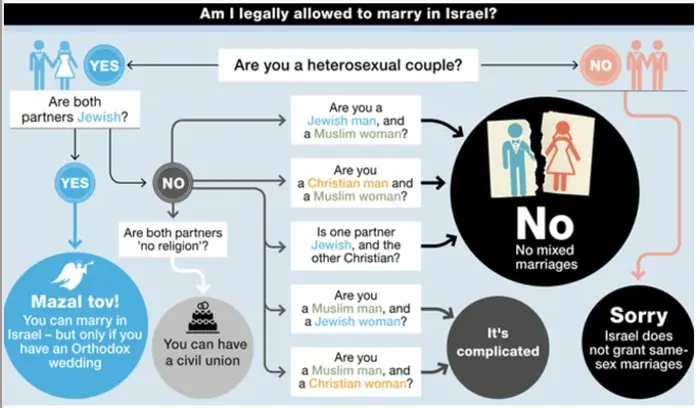
Video:
Why Israel has so many Palestinian prisoners? by Vox
theyre so fucked
Israel's Skin banks:
"Israel possesses the world's largest skin bank, a medical facility that stores human skin for later use in treating burns and skin cancers. This bank was established in 1986 under the supervision of the military medical sector of the occupying army, which provides its services internationally, especially to requests from Western countries." (Jordan News, 2023)
So they essentially massacre Palestinians, steal their bodies and return them with their organs missing... They also quite literally use Palestinian bodies as currency... And they accuse Palestinians of being barbaric. Israel is vile.
Debunking the world’s largest skin bank: How Israelis harvest organs without consent? Ahmed Selim
Israel as a Sex Offender's H(e)aven:
'Tip of the Iceberg': How Foreign Sex Offenders Find Refuge in Israel (Haaretz, 2022)
Talmudic Judaism:
American Pravda: Oddities of the Jewish Religion by Ron Unz:
"Jewish lives have infinite value, and non-Jewish ones none at all, which has obvious policy implications. For example, in a published article a prominent Israeli rabbi explained that if a Jew needed a liver, it would be perfectly fine and indeed obligatory, to kill an innocent Gentile and take his."
BUT BUT BUT HAMAS -
hummus beats women... in arm wrestling jk they lose
-Israeli Occupation Forces' helicopters fired at Hamas and Rave goers, killing Israelis too. They also fired at an Israeli settlement and killed a 12 year old israeli girl in the process (Cradle, 2023)
Kwame Ture on Constant Struggle, Socialism, and Zionism
"You never judge a system by its adherence.
You judge it by its principles...
If you judge Christianity by Christians it fell with Judas."
Mehdi Hasan: Islam is a Peaceful Religion
Although I am not personally Muslim, I have had the fortunate opportunity of having two very close Muslim friends in my life. Through these relationships, there was not one moment that I ever felt as if they or their families practiced a religion of violence.
While not everyone has had the same privilege of befriending a Muslim, and despite whatever abhorrent narrative the western media may portray Muslims as, I am an adamant believer in their benevolence and capacity for love.
Edward Said & Palestine
Probably the most cutty yet posh intellectual to ever live,
Edward Said is a widely known Palestinian-American scholar. His book Orientalism changed the game as a canonical text on western imperialism and western perceptions of Arabia;
he is regarded to have started postcolonial studies.
He was venerated as "Professor of Terror" by the conservative magazine Commentary.
Apparently, his office at Columbia University had bullet proof windows, and his office was also firebombed...
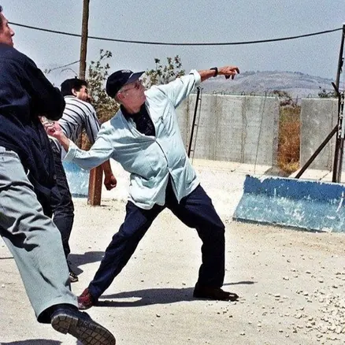
Symbols of Palestine
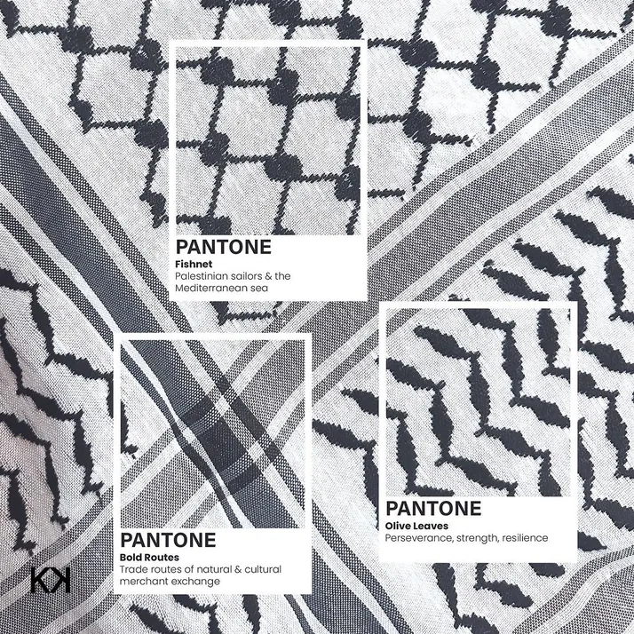
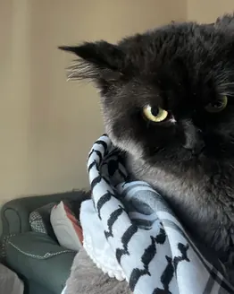
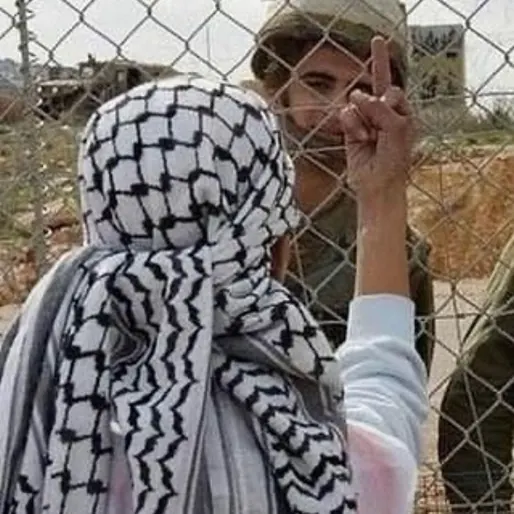
.
Why the watermelons?
"The use of the watermelon as a Palestinian symbol is not new. It first emerged after the Six-Day War in 1967, when Israel seized control of the West Bank and Gaza, and annexed East Jerusalem. At the time, the Israeli government made public displays of the Palestinian flag a criminal offense in Gaza and the West Bank." (Time, 2023)
IF YOU DONT LIKE WATERMELONS FUCK YOU@!!!!!! haha
@melonsoverlemons : petition to sign boycott of lemon sours in Japan
Photo by @kuvrd, they are Palestinian owned and make authentic keffiyehs support them!!!
"We proudly produce all of our keffiyehs in our family-owned keffiyeh factory currently operating in Amman, Jordan. Established by Jido Ahmed Al Bulbul in Jericho, Palestine in the 1950's, the factory was relocated after he was expelled from Palestine in 1967. The factory is now run by two of his children and produces a wide variety of keffiyehs amongst other textiles. Although our headquarters is based in North America, we recognize the importance of creating pieces authentically and through that, supporting the local Arab community."
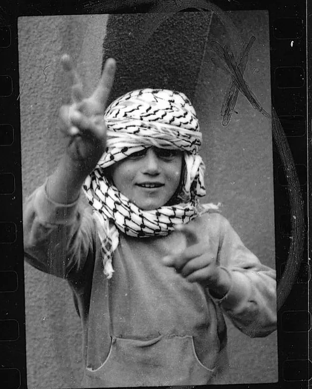
Yasser Arafat, 1974: taken from
"DECODING THE HISTORY AND SIGNIFICANCE OF THE PALESTINIAN KEFFIYEH"
The Last Palestinian Kaffiyeh Maker
LAST KAFFIYEH FACTORY IN PALESTINE:
How to help Palestine
Spread Awareness TALK THAT TALK educate, discuss
Let's say you're having a conversation with your friends about the Russia-Ukraine war. In this, you would address both sides of the country and at some point of the conversation you would probably explicitly mention Russia and Ukraine. Now, when talking about Palestine and Israel I have noticed that in many conversations people will easily state Israel and acknowledge their existence, but they won't do the same for Palestine. They won't even say "Palestine". Hence, I believe it is extremely vital to not only talk about Palestine but merely stating the existence of Palestine can go a long way to deter the western narrative and objective that is trying to ethnically cleanse or wipe Palestine off the map - but quite literally you can look at contemporary maps of the world and most probably do not list Palestine.
Lastly, never estimate the power that you hold and the ripples that you can create as an individual, or better yet the ripples that you can create as a collective. In other words, our ability to create change is only stronger when we act in unison. So find other like-minded rational, loving, anti-racist, anti-colonialist, people and organize. That's what we did on our campus and it has not only been a great learning experience but has allowed me to create community in a place where I mostly despise.
Elevate the voices of Palestinians and raise your voice against injustice!!!!!!!!!!!!
donation nation (?)
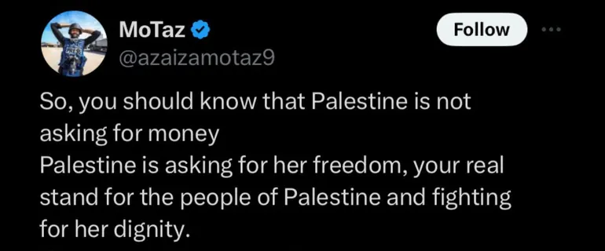
As of right now, humanitarian aid is mostly not being allowed into Gaza so its not as fruitful to be donating money right now... However, there are still a few organizations and methods of donating that are able to support Palestinians.
Donate esim cards to Gazans, here is my paypal link:
these esim cardsprovide cellular service and data to Palestinians in gaza, communication is vital especially under the conditions that they are currently facing...
Local organizations in Gaza to donate to compiled by buildpalestine
will add more as i see direct calls for donations if u kno any and would like them to be added zashizine(at)gmail
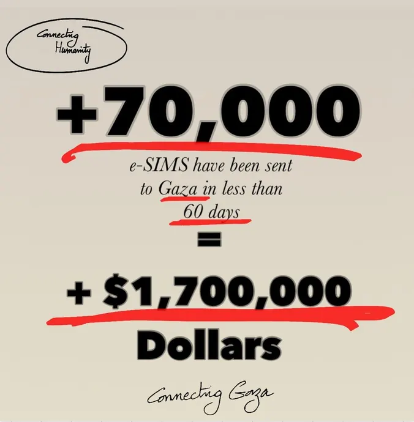
BOYCOTT!!!!!!!!!!! DIVEST!!!!! SANCTION!!!!
What de fuq is a boycott, you may ask?
Boycotting is when you intentionally abstain from financially supporting a business, state, or even a person because you disagree with how they operate. So for instance, in Japan we don't agree with Israel's on-going occupation and genocide of Palestinians so we are working to cut off Israeli ties with Japanese beverage companies that use Israeli lemons in their drinks.
By boycotting a company, it puts economic pressure on them to change their operating procedures. That is the first step of the boycott, divest, sanction (BDS) movement. BDS started in 2005 as a Palestinian-led movement created to help end the oppression of Palestinians.
The ultimate goal of a boycott is to get companies to cut ties with the problematic states that they do business with. Then from there the final goal is to get governments to sanction the state, that is to completely sever any support or ties with them. This is the ultimate fuck you and can severely weaken the sanctioned state. It leaves the opposition, frail and scared; all on their lonesome. Thus, we are working to boycott, divest, and sanction Israel!
Money talks ya'll unfortunately, most of the time even louder than any other actions in today's society, so boycott!!! support local shit not genocide drip coffee aka starbucks and shit
It also must be noted that boycotting is more effective when it is a targeted practice; there's a shit load of brands that'll circulate on social media yet it can be unclear what their connection to Israel is and potentially too disorganized to have any centralized impact. It's better to have a strong concentrated, targeted boycott of a few several brands rather than a dispersed ineffective boycotting of many.
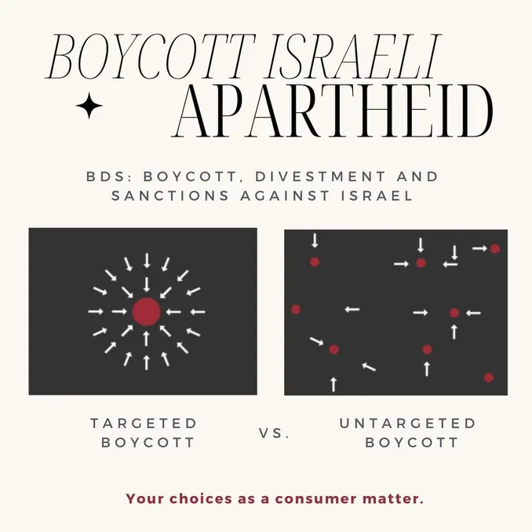
Japan:
boycott itochu in Japan:
they have deals with Israel's Elbit systems, their largest weapons manufacturer & dealer.
Itochu owns family mart, so thats one of the main targets of boycotting out here
boycott lemon sours / israel lemon use in Japan!!
Brands to Boycott
Evil also dies! ! ! ! !
If it isn't clear already, Zashi as a team unanimously supports Palestine and their fight for freedom. When Vaughn and I were first starting to figure the contents and ethos of Zashi in Seijo's Hidakaya, we both knew we wanted to create more space for critical discussion around art and politics; in other words, we wanted to cut the bullshit. Israel's existence and pervasive support among the west is one large nail in the world as a colonial scheme built on avarice and racism. Thus, it is only natural that Zashi supports the cause and creates space as a resource rooted in building community rather than exclusivity.
Damn so you made it this far, I appreciate u in any capacity for looking through this. Any effort to educate yourself further must always be applauded. But again, this list is not exhaustive and will continue to change since its creation in Nov. 2023 --> onwards. Any feedback and criticism is much appreciated. Let's continue to work on bettering society and the culture.
Zashi against colonialism!
Zashi against gentrification!
Zashi against genocide!
Zashi for Palestinian Liberation!
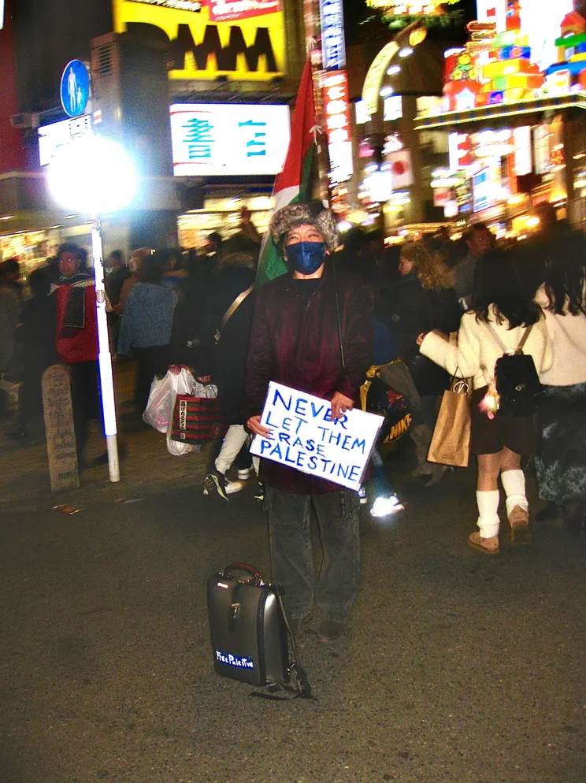
アキラさん photographed by Ameer (2023)


ざっし（Za ]
ｋ。ンタクト
SHI
ツ